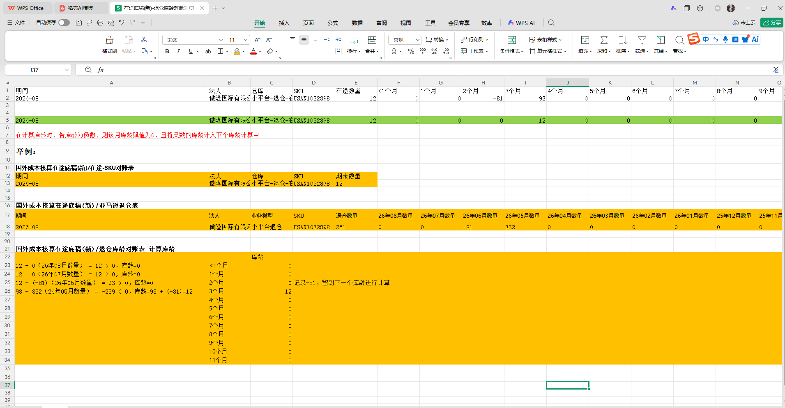

<!DOCTYPE html>
<html>
  <head>
    <title>在途底稿-亚马逊退仓库龄计提优化</title>
    <meta http-equiv="X-UA-Compatible" content="IE=edge"/>
    <meta http-equiv="content-type" content="text/html; charset=utf-8"/>
    <link href="resources/css/axure_rp_page.css" type="text/css" rel="stylesheet"/>
    <link href="data/styles.css" type="text/css" rel="stylesheet"/>
    <link href="files/在途底稿-亚马逊退仓库龄计提优化/styles.css" type="text/css" rel="stylesheet"/>
    <link href="https://fonts.googleapis.com" rel="preconnect"/>
    <link href="https://fonts.gstatic.com" rel="preconnect"/>
    <link href="https://fonts.googleapis.com/css2?family=Inter:wght@100..900&display=swap" rel="stylesheet"/>
    <script src="resources/scripts/jquery-3.7.1.min.js"></script>
    <script src="resources/scripts/axure/axQuery.js"></script>
    <script src="resources/scripts/axure/globals.js"></script>
    <script src="resources/scripts/axutils.js"></script>
    <script src="resources/scripts/axure/annotation.js"></script>
    <script src="resources/scripts/axure/axQuery.std.js"></script>
    <script src="resources/scripts/axure/doc.js"></script>
    <script src="resources/scripts/messagecenter.js"></script>
    <script src="resources/scripts/axure/events.js"></script>
    <script src="resources/scripts/axure/recording.js"></script>
    <script src="resources/scripts/axure/action.js"></script>
    <script src="resources/scripts/axure/expr.js"></script>
    <script src="resources/scripts/axure/geometry.js"></script>
    <script src="resources/scripts/axure/flyout.js"></script>
    <script src="resources/scripts/axure/model.js"></script>
    <script src="resources/scripts/axure/repeater.js"></script>
    <script src="resources/scripts/axure/sto.js"></script>
    <script src="resources/scripts/axure/utils.temp.js"></script>
    <script src="resources/scripts/axure/variables.js"></script>
    <script src="resources/scripts/axure/drag.js"></script>
    <script src="resources/scripts/axure/move.js"></script>
    <script src="resources/scripts/axure/visibility.js"></script>
    <script src="resources/scripts/axure/style.js"></script>
    <script src="resources/scripts/axure/adaptive.js"></script>
    <script src="resources/scripts/axure/tree.js"></script>
    <script src="resources/scripts/axure/init.temp.js"></script>
    <script src="resources/scripts/axure/legacy.js"></script>
    <script src="resources/scripts/axure/viewer.js"></script>
    <script src="resources/scripts/axure/math.js"></script>
    <script src="resources/scripts/axure/jquery.nicescroll.min.js"></script>
    <script src="data/document.js"></script>
    <script src="files/在途底稿-亚马逊退仓库龄计提优化/data.js"></script>
    <script type="text/javascript">
      $axure.utils.getTransparentGifPath = function() { return 'resources/images/transparent.gif'; };
      $axure.utils.getOtherPath = function() { return 'resources/Other.html'; };
      $axure.utils.getReloadPath = function() { return 'resources/reload.html'; };
    </script>
  </head>
  <body>
    <div id="base" class="">

      <!-- Unnamed (矩形) -->
      <div id="u3689" class="ax_default _文本段落 transition notrs">
        <div id="u3689_div" class=""></div>
        <div id="u3689_text" class="text ">
          <p><span>在途底稿-亚马逊退仓库龄计提优化（退仓库龄对账表页面，国外和境外两个页面都需要更改） ：</span></p><p><span><br></span></p><p><span>1.在途底稿当期会有冲回退仓数量的情况，导致库龄会有出现负数，需改成当库龄的数量计算为负数时，将其负数延续到下一个库龄段，当前库龄段等于0。</span></p><p><span><br></span></p>
        </div>
      </div>

      <!-- Unnamed (图像) -->
      <div id="u3690" class="ax_default _图片_ transition notrs">
        
        <div id="u3690_text" class="text " style="display:none; visibility: hidden">
          <p></p>
        </div>
      </div>
    </div>
    <script src="resources/scripts/axure/ios.js"></script>
  </body>
</html>
